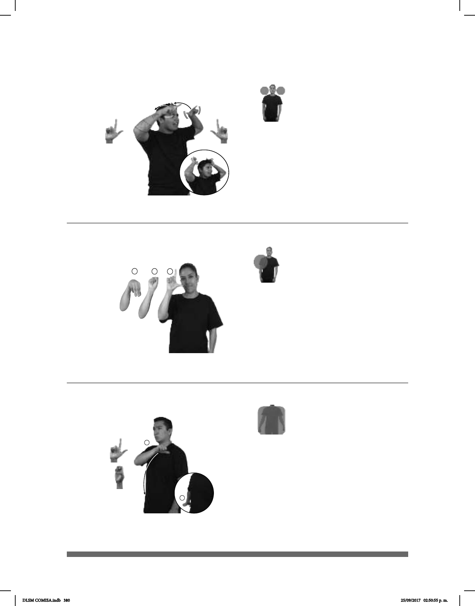

380
Seña: SS
L.1
Las palmas inician hacia
abajo y terminan oblicuas hacia arriba y
hacia fuera.
A la altura de la cabeza.
Las manos se mueven
formando un arco hacia atrás mientras se
agitan.
: Ojos inusualmente
abiertos, boca semiabierta, punta de la
lengua hacia fuera.
1. sust. f. Estado en que se
encuentra quien está loco o fuera de sus
cabales. 2. sust. f. Exaltación del ánimo o
de los ánimos, producida por algún afecto u
otro incentivo.
Seña: SM
Seña que pasa de
A la altura del hombro.
sust. f. Medio de
comunicación en la comunidad
sorda de las regiones urbanas y
Seña: SM
Seña que pasa de
Palma hacia abajo.
Del hombro a la cadera,
del lado izquierdo al derecho.
Recto.
Político y abogado
mexicano que fue presidente de
(L-118)
(L-119)
(L-120)
ESE PLATO DELICIOSO LOCURA
Ese plato está delicioso, de locura.
#LSM SIGNIFICA LENGUA-DE-SEÑAS-MEXICANA
ANTES LUIS-ECHEVERRÍA-ÁLVAREZ PRESIDENTE MÉXICO
DLSM COMISA.indb 380 25/09/2017 02:50:55 p. m.